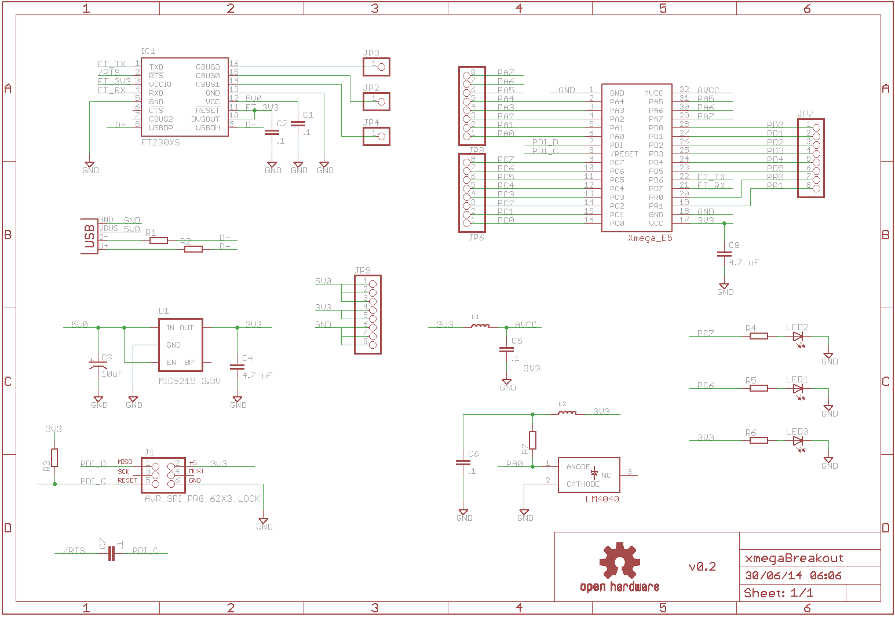
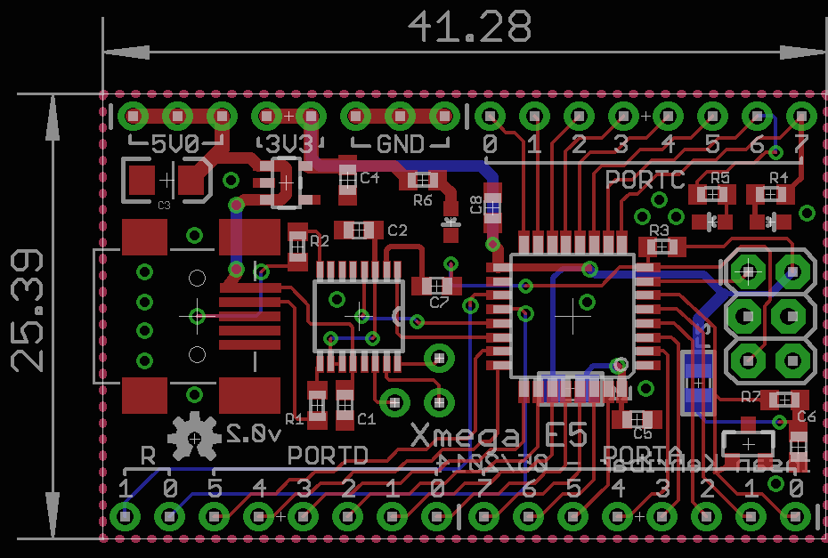
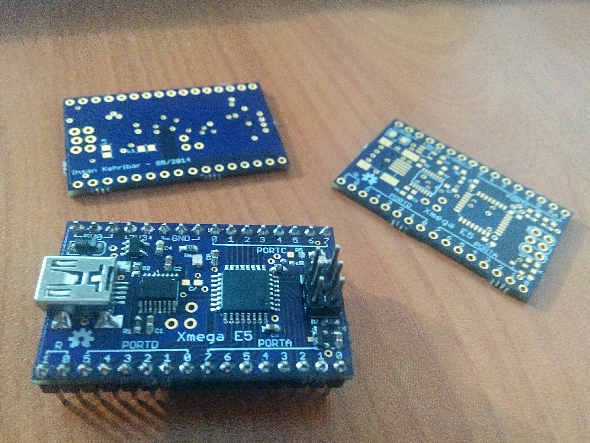

xmegaE5 development board
I've been forcing myself to learn more about xmega chips but couldn't find a good dev board. Xmega chips are really good. For example Xmega32E5 is faster and much more feature rich than Atmega328p but at the same time it is almost twice as cheap. I want to get to a level where I can write code for XmegaE5 as easily as I can write for Atmega series. Therefore I designed this dev board for my own practice.I tried to keep the noise level on the PCB as low as possible. I used ferrite chips in the analog voltage lines. I also used a special 2048mV voltage reference IC to provide additional stability to ADC readings.
I also put FT230x chip to the board for basic USB-UART capability. I'm planning to write a bootloader for the XmegaE5 but I haven't done it yet.
You can find my up-to-date progress for developing a codebase around this board from this link: https://github.com/kehribar/xmegaE5
Schematic

Layout

Build

Resources
License
This project is published under the terms of the GNU General Public License, version 3 licence.


{kind=link}
{kind=link}